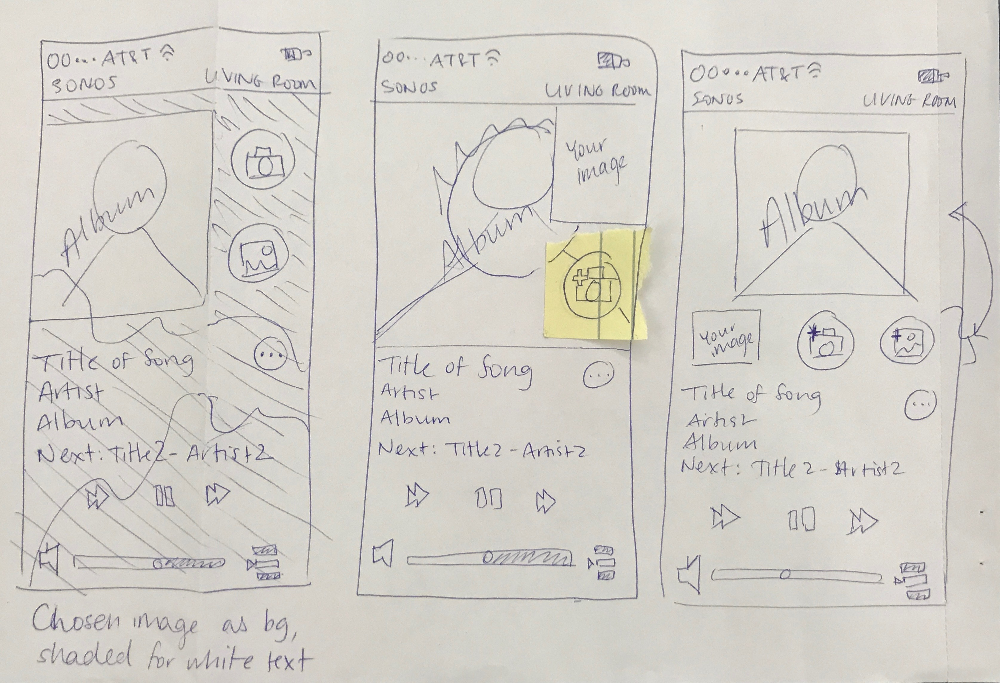
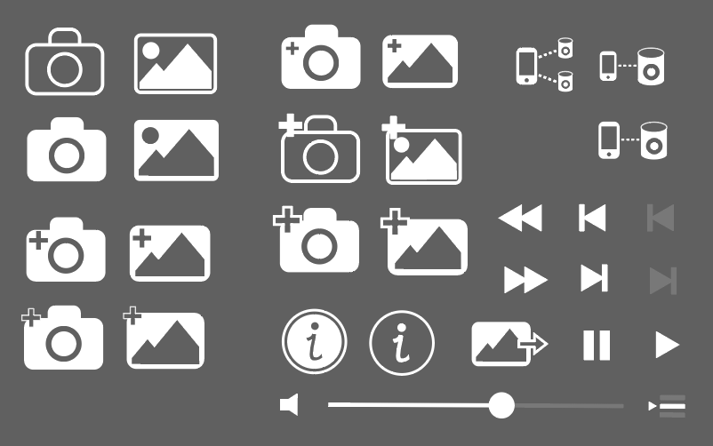
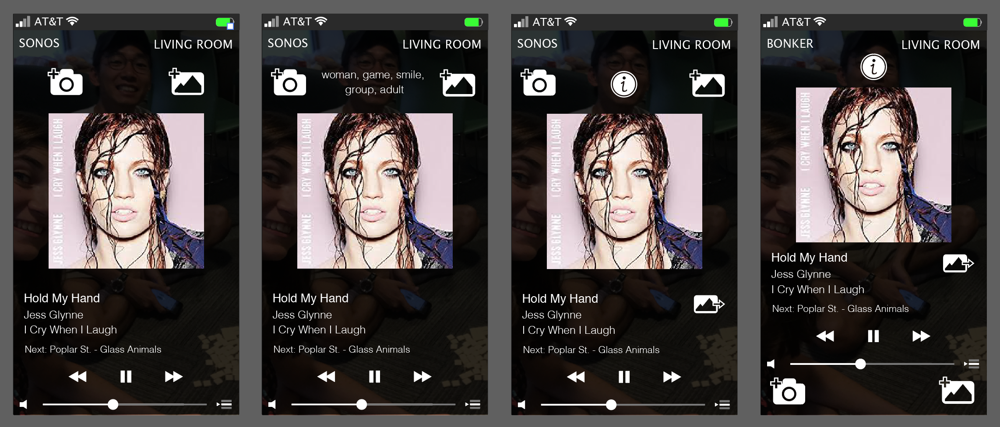

< Back
In 12 days, a peer and I designed an app in which the user takes or chooses a picture, and then the app generates a playlist based on the contents of the photo. I designed the icons and app layout and did a bit of React Native coding, while he did the bulk of the coding. Together we brainstormed functionality and high-level implementation, and we both conducted preference testing of icons and app layout, as well as workflow testing once a prototype was developed. In the end, we won the design challenge and presented our project at Sonos' Hack Week.
My partner and I began by sketching out our ideas and searching the Web for similar apps. We also downloaded the current version of the Sonos music app and used this to think about branding, layout, and desired functions.
 I designed all the icons and layouts for this app in Adobe Illustrator. My partner and I conducted informal preference testing to choose the best version of each icon, and informal experience testing to ensure that app workflow and layout made sense to users.
These were the designs off of which my partner and I based our coding for the functional app. Toggling the "i" button reveals explainable AI: it shows why the user-input image generated this particular music playlist in this particular genre. The "share" button (to the right of the song title) shares your image to a friend (via text, email, etc.), who can then load it into this app to get the same playlist you did.
In our experience testing we found that, on a smart phone, the control buttons at the bottom were too small to reliably hit with a large thumb.
The above is the final version of our functional app, written in React Native and usable on Expo on both Android and iOS. We decided to place the primary control buttons at the bottom (including the photo buttons, as in last screen) since that is where the user's thumbs are when they use their phone. There is also new button here, next to the volume slider. This is the "connect to Sonos speakers" button. With Sonos, you can connect to multiple speakers at once - this is why the icon features two speakers and not just one. One thing I would add is branding in the upper left-hand corner.
< Back